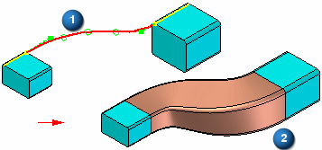
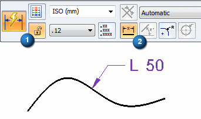

Keypoint Curve command
Use the Keypoint Curve command  to create a 3-D curve through a set of three or more points. The points can be points
you create with the Point command, keypoints on wireframe elements and edges, or points
in free space.
to create a 3-D curve through a set of three or more points. The points can be points
you create with the Point command, keypoints on wireframe elements and edges, or points
in free space.

You can use this command to create a bridge curve (1), which can be used as a path for a swept feature (2).

When you select a keypoint on a wireframe element or edge as the endpoint (3) of the curve, the End Conditions Step allows you to specify whether the curve is created tangent to the wireframe element or edge you selected. When you specify that the curve is tangent to an element at its endpoint, you can also modify the magnitude of the tangent vector by dragging the tangent vector handle (4) to a new location. When you modify the magnitude of the tangent vector, you also may change the radius of curvature of the curve. If the modified curve was used as a path for a swept feature, the swept feature will also update.

You can use the OrientXpres tool to help you define the location of a point on a keypoint curve. For example, you can use OrientXpres to lock input to a particular axis or plane when creating or editing a keypoint curve.
Inserting points to a curve
You can add new points along a curve or add a point in free space to add a new segment to the end of the curve.
To add a point along a path, while editing the curve, hold the Alt key and click the location along the curve where you want to add the point.

To add a point to the end of the path, while editing the curve, hold the Alt key and click a location in free space where you want to add the point.

Removing points from a curve
You can remove a point from a curve.
To remove a point, while editing the curve, hold the Alt key and click the point you want to remove. When you remove edit points, the control vertex points move and the shape of the curve changes.

If you remove the start or end point of a curve, the path truncates to the next control on the curve and the tangency of the next point remains the same.
Defining curve length
You can set the Curve Length  options for the keypoint curve definition. When this option is set, the curve length
remains fixed during an edit. You click the Fixed Length (1) button to lock the curve length (3). The Constrain Direction (2) button defines the direction that the control points move when you edit the curve
length You can constrain along the X, Y and Z axis or any linear edge/curve or axis.
The increase or decrease in length bows in that direction.
options for the keypoint curve definition. When this option is set, the curve length
remains fixed during an edit. You click the Fixed Length (1) button to lock the curve length (3). The Constrain Direction (2) button defines the direction that the control points move when you edit the curve
length You can constrain along the X, Y and Z axis or any linear edge/curve or axis.
The increase or decrease in length bows in that direction.

Synchronous keypoint curves cannot be edited after creation.
Dimensioning a keypoint curve
When placing a Smart dimension on a keypoint curve, the dimension type is set to Length (2), unlocked (1), and cannot be edited.
